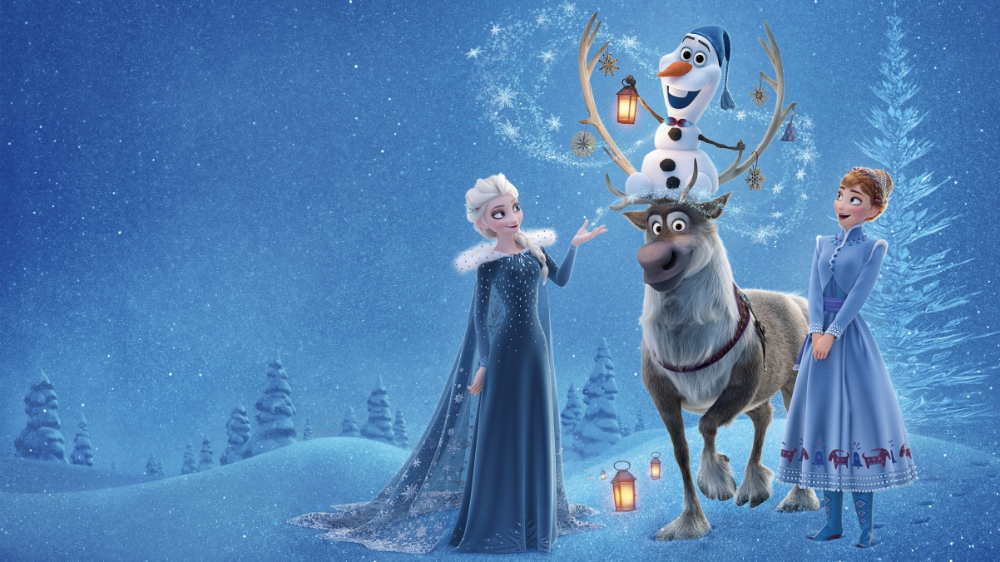

雪宝独唱 · Josh Gad · 时长 1:54
📖 In Summer
雪宝独唱 · Josh Gad · 时长 1:54
一、歌曲基本信息
词曲作者
Kristen Anderson-Lopez & Robert Lopez
《In Summer》是《冰雪奇缘 (Frozen, 2013)》中的经典歌曲，由Kristen Anderson-Lopez与Robert Lopez创作。这首歌是雪宝（Olaf，Josh Gad 配音）的独唱，出现在三人组遇雪宝后、于荒野行进时。风格为喜剧而讽刺的叙事歌：雪宝畅想夏日的种种——蜜蜂、蒲公英、沙滩、古铜色皮肤、夏日微风，天真又雀跃；而全曲的讽刺装置在于，他做的每一件事都只会让他融得更快。（来源：迪士尼官方 / Frozen原声带）
>
二、完整歌词（中英对照 · 逐句交互 · 播放高亮）
VERSE 1 · 主歌一 · 雪宝
💡 点击查看逐句考据
📝 逐句考据
蜜蜂会嗡嗡叫——雪宝的第一项夏日幻想清单开场。它从最美满的意象（阳光下的蜜蜂、蒲公英）谈起，仿佛在背一首向往的田园诗。它越把夏天描绘得生机盎然，观者便越揪心：这个靠冰维持的精灵，对暖意毫无防备。
Kids'll blow dandelion fuzz
孩子们会吹散蒲公英绒毛
💡 点击查看逐句考据
📝 逐句考据
雪宝把夏天想象成一幅最无害的田园画：孩子们对着蒲公英吹气。它越把夏天描绘得体面温柔，就越显它对高温全无概念——这些"棉花糖般的念头"全来自它对暖的纯真憧憬，观者却忍不住替它捏一把汗。
And I'll be doing whatever snow does
而我将做着雪会做的事
💡 点击查看逐句考据
📝 逐句考据
雪宝天真地以为，自己到了夏天仍会照常"做雪该做的事"。它把自己当作一件量产的雪人，却不知季节会怎样吞噬它——这句近乎自况的预言，让整首歌的雀跃都铺上一层温柔的悲剧底色。
💡 点击查看逐句考据
📝 逐句考据
在夏天（第一次点题）。雪宝第一次吐出这个令它魂牵梦萦的词，双眼放光地幻想：阳光、沙滩、温暖的怀抱。听众知道它是冰雪做的精灵，幽默反讽立刻成立——它把夏天错当成 typo 般美好的终极愿望。
A drink in my hand
手中一杯饮料
💡 点击查看逐句考据
📝 逐句考据
雪宝幻想的夏日标配：手里一杯冷饮。它把"夏天=放松=快乐"当成不证自明的真理，还煞有介事地罗列细节；它越妆容齐整地畅想，观众越清楚这套蓝图与它的存在本身性命攸关。
My snow up against the burning sand
我的雪靠着滚烫的沙子
💡 点击查看逐句考据
📝 逐句考据
我的雪，贴着滚烫的沙地——雪宝大胆构想“雪与滚烫沙地对峙”的画面，把最不可能共存的物象强行并置。观众一眼看出这是物理上的自杀式联想，而它天真地当作了骄傲的资本，讽刺与可爱在此相撞。
Prob'ly getting gorgeously tanned
大概会晒成漂亮的古铜色
💡 点击查看逐句考据
📝 逐句考据
晒成漂亮的古铜色——雪宝连"晒黑"这种最耗凉的副作用，都被它幻想成光彩耀人的幸事。物理常识与它脑内浪漫图景的落差造出全曲最大笑点，也让这份"我会变成阳光美男"的自信显得既可爱又心酸。
CHORUS 1 · 副歌 · 雪宝
💡 点击查看逐句考据
📝 逐句考据
在夏天（第二次点题）。它开始细数夏日的美好设想，边说边手舞足蹈；导演在这里提前揭底——观众看见它脚下的冰正在滴水，它的天真与现实的残酷就在同一帧里相撞。
I'll finally see a summer breeze blow away a winter storm
我终于会看到夏日微风卷走冬日风暴
💡 点击查看逐句考据
📝 逐句考据
我终于能看到夏日的微风吹散冬日的风暴，雪宝想象夏天的温暖能驱散冬天的寒冷。他不知道的是，夏天的温暖对他来说是致命的——他以为夏天的微风是美好的，实际上那是他的终结者。
And find out what happens to solid water when it gets warm
看看固态的水变暖后会怎样
💡 点击查看逐句考据
📝 逐句考据
并发现固态水变暖后会发生什么！，雪宝好奇冰变暖后会怎样。这是一个充满戏剧性讽刺的歌词——观众知道冰变暖会融化，但雪宝不知道，他还在好奇地期待答案——这个答案，就是他的命运。
And I can't wait to see
我等不及要看
💡 点击查看逐句考据
📝 逐句考据
我迫不及待想看——雪宝急切地把“夏日亮相”预演成一场被众人喝彩的演出。它笃定自己会因与众不同而受追捧，而真相是它一旦踏入夏天便会融化——这个反差让它的“迫不及待”每一句都像倒计时。
What my buddies all think of me
我的伙伴们会怎么看我
💡 点击查看逐句考据
📝 逐句考据
雪宝挂心的并非自己能否活过夏天，而是"伙伴们会怎么看我"。它把备受关注与赞许当成理想夏日的动力——这份对认同的渴求，恰是它作为艾莎所造、又长期陪伴安娜的"孩子气角色"最动人的一面。
Just imagine how much cooler I'll be
想象一下我会变得多酷
💡 点击查看逐句考据
📝 逐句考据
"想象一下我会变得多酷"——雪宝把"cool"当成时髦的夸奖，却不知道对夏日里的雪人而言，它字面意义上的寒冷才是续命的关键。这层双关的误会，让它的沾沾自喜既好笑又令人心疼。
💡 点击查看逐句考据
📝 逐句考据
在夏天（第三次点题）。渐入高潮，雪宝的想象愈发离谱，把“夏天”彻底神圣化成永生极乐之地；它越认真，喜剧的张力越强，也越让人心疼这个连自己会融化都不知道的生物。
VERSE 2 · 主歌二 · 雪宝
Da da, da doo, ah bah bah bah bah bah boo
哒哒，哒嘟，啊巴巴巴巴巴巴布
💡 点击查看逐句考据
📝 逐句考据
一连串无意义的哼唱，是雪宝在向"夏天"唱小夜曲。玩闹式的旋律堆叠，恰如其分地表现它初次幻想爱情的轻浮与热烈——没有实质内容，却满是涌上心头的甜腻泡沫。
The hot and the cold are both so intense
炎热与寒冷都如此强烈
💡 点击查看逐句考据
📝 逐句考据
热和冷都是如此强烈，雪宝说热和冷都很强烈。他不知道的是，热对他来说是致命的，而冷是他生存的必要条件——他以为热和冷是平等的，实际上热是他的敌人。
Put 'em together it just makes sense!
把它们合在一起就太有道理了！
💡 点击查看逐句考据
📝 逐句考据
把它们放在一起，就很合理了！，雪宝天真地认为热和冷可以共存。这是他对夏天的误解——他不知道热会消灭冷，就像他不知道夏天会消灭他——这种天真，让他的角色更加可爱，也更加让人心酸。
💡 点击查看逐句考据
📝 逐句考据
仍是哼唱点缀。此时雪宝几乎已相信自己是"夏日之子"了，音节越随意，越显它把幻想当真的投入——滑稽的欢唱里，是一个单靠爱与想象支撑存在的雪人。
Winter's a good time to stay in and cuddle
冬天适合待在家里拥抱
💡 点击查看逐句考据
📝 逐句考据
冬天是待在室内拥抱的好时候，雪宝承认冬天也有好处。但他更向往夏天的户外活动——他不知道的是，冬天才是他能生存的季节，夏天是他的末日。
But put me in summer and I'll be a —
但把我放到夏天，我就会变成一个——
💡 点击查看逐句考据
📝 逐句考据
"可我一到夏天就会变成一个——"话说到一半悬住、词穷。雪宝本要报出一个光鲜的身份，却卡了壳；这种"蓄势却措手不及"的瞬间，恰是它天真本性的注解，也为下一句"尽管这和物理相悖"铺好了台阶。
💡 点击查看逐句考据
📝 逐句考据
快乐的雪人！，雪宝最后说自己会变成一个快乐的雪人。这是全曲最具讽刺性的歌词——观众知道他在夏天不会快乐，反而会融化——但他的天真和乐观，让他相信自己会快乐，这种信念，既可爱又让人心酸。
FINALE · 终段副歌 · 雪宝
When life gets rough I like to hold on to my dream
生活艰难时，我喜欢紧抱我的梦想
💡 点击查看逐句考据
📝 逐句考据
雪宝道出全片关于乐观的题眼：生活再难，我也要紧紧抱住我的梦想。一个随时会融化的雪人，靠想象火热的夏天为自己取暖——它的"梦"既全无根据，也是它能在冷酷世界活下去的信仰。
Of relaxing in the summer sun, just lettin' off steam
在夏日阳光下放松，尽情释放
💡 点击查看逐句考据
📝 逐句考据
在夏日阳光下放松、尽情释放——雪宝把"lettin' off steam"用成字面上的"冒蒸汽"，又一次在无意间拿生命开玩笑。它越把蒸发说得惬意，越映照出它对自身因季节而脆弱的全然不知。
Oh the sky will be blue
哦，天空会湛蓝
💡 点击查看逐句考据
📝 逐句考据
雪宝坚信夏日的天空会湛蓝。它把"蓝"当作美好的信号，却不懂自己正依赖"蓝"的反面——寒冷与白雪——才得以存在。它的蓝天情结，是整支歌里最温柔的错觉。
And you guys'll be there too
你们也会在那里
💡 点击查看逐句考据
📝 逐句考据
雪宝承诺它最在乎的人都会一路相伴：克里斯托夫、安娜，还有刻在它记忆里那个盛夏里的亲友。它唱的不只是天气，而是"与重要的人在一起"的执念——这让它的夏天梦，从自娱自乐升华为对爱与陪伴的告白。
When I finally do what frozen things do
当我终于做到冰冻之物会做的事
💡 点击查看逐句考据
📝 逐句考据
等我终于作了“冰雪之物”该做的事——雪宝这句近乎自况的预言，轻轻点破了它的宿命：冰雪之物在夏天能做的，只有融化成水。它唱得越雀跃，越像一首甜美的挽歌，也为《冰雪2》里它曾融化、终获成长的命运埋下伏笔。
💡 点击查看逐句考据
📝 逐句考据
在夏天（最终点题）。全曲在它一声比一声高的“在夏天”中收束，雪宝攥着清澈的信念不肯松口；幽默与深情在此合流——正因为观众知晓真相，它这份无知的热望才格外动人。
💡 点击查看逐句考据
📝 逐句考据
在夏天（第一次点题）。雪宝第一次吐出这个令它魂牵梦萦的词，双眼放光地幻想：阳光、沙滩、温暖的怀抱。听众知道它是冰雪做的精灵，幽默反讽立刻成立——它把夏天错当成 typo 般美好的终极愿望。
三、关键歌词逐句考据
蜜蜂会嗡嗡叫——雪宝的第一项夏日幻想清单开场。它从最美满的意象（阳光下的蜜蜂、蒲公英）谈起，仿佛在背一首向往的田园诗。它越把夏天描绘得生机盎然，观者便越揪心：这个靠冰维持的精灵，对暖意毫无防备。
2
"Prob'ly getting gorgeously tanned"
大概会晒成漂亮的古铜色
晒成漂亮的古铜色——雪宝连"晒黑"这种最耗凉的副作用，都被它幻想成光彩耀人的幸事。物理常识与它脑内浪漫图景的落差造出全曲最大笑点，也让这份"我会变成阳光美男"的自信显得既可爱又心酸。
3
"Just imagine how much cooler I'll be"
想象一下我会变得多酷
"想象一下我会变得多酷"——雪宝把"cool"当成时髦的夸奖，却不知道对夏日里的雪人而言，它字面意义上的寒冷才是续命的关键。这层双关的误会，让它的沾沾自喜既好笑又令人心疼。
4
"But put me in summer and I'll be a —"
但把我放到夏天，我就会变成一个——
"可我一到夏天就会变成一个——"话说到一半悬住、词穷。雪宝本要报出一个光鲜的身份，却卡了壳；这种"蓄势却措手不及"的瞬间，恰是它天真本性的注解，也为下一句"尽管这和物理相悖"铺好了台阶。
快乐的雪人！，雪宝最后说自己会变成一个快乐的雪人。这是全曲最具讽刺性的歌词——观众知道他在夏天不会快乐，反而会融化——但他的天真和乐观，让他相信自己会快乐，这种信念，既可爱又让人心酸。
6
"When life gets rough I like to hold on to my dream"
生活艰难时，我喜欢紧抱我的梦想
雪宝道出全片关于乐观的题眼：生活再难，我也要紧紧抱住我的梦想。一个随时会融化的雪人，靠想象火热的夏天为自己取暖——它的"梦"既全无根据，也是它能在冷酷世界活下去的信仰。
7
"When I finally do what frozen things do"
当我终于做到冰冻之物会做的事
等我终于作了“冰雪之物”该做的事——雪宝这句近乎自况的预言，轻轻点破了它的宿命：冰雪之物在夏天能做的，只有融化成水。它唱得越雀跃，越像一首甜美的挽歌，也为《冰雪2》里它曾融化、终获成长的命运埋下伏笔。
在夏天（第一次点题）。雪宝第一次吐出这个令它魂牵梦萦的词，双眼放光地幻想：阳光、沙滩、温暖的怀抱。听众知道它是冰雪做的精灵，幽默反讽立刻成立——它把夏天错当成 typo 般美好的终极愿望。
四、歌曲定位与深度分析
🎯 歌曲定位
雪宝独唱 ：雪宝（Olaf，Josh Gad 配音）的独唱，时长 1:54，出现在三人组遇雪宝后、于荒野行进时。风格 ：经典歌舞杂耍（vaudeville）式的 soft-shoe 软鞋舞曲，轻快爵士味、行走低音线 + 尤克里里质感 [来源：visualfoodie / justapedia]。💡 内涵与主题

夏日幻想 把“夏天”当不证自明真理的雪宝——它越雀跃，观者越忍不住替它捏一把汗。
表层 ：雪宝畅想夏日的种种——蜜蜂、蒲公英、沙滩、古铜色皮肤、夏日微风，天真又雀跃。戏剧反讽（核心笑点） ：观众都知道雪人遇热会融化，而雪宝每一条"夏日幻想"恰恰都在加速自己的消亡；其"无知"本身即是喜剧与一丝悲凉的来源 [来源：justapedia / visualfoodie]。情感内核 ：雪宝是艾莎与安娜童年造雪记忆的"最后残片"，仍带着两姐妹当年的天真，所以一切举动都透着"稚嫩的希望" [来源：Josh Gad 访谈，justapedia]。🎬 在电影中的作用
喜剧喘息与角色深化 ：在逃亡 / 寻姐的紧张线索中插入，用雪宝的乐观冲淡黑暗；同时让观众更爱这个"可怜又无知"的角色。推进羁绊 ：雪宝对"夏天"的向往，隐喻他对温暖与陪伴的渴望，为后续他成为"真爱"象征埋线。🌱 来源与创作灵感
词曲：Kristen Anderson-Lopez & Robert Lopez。 前身废案 ：本曲取代了更早的雪宝歌 "Hot Hot Ice"，Anderson-Lopez 自评"像 Hot Hot Hot 遇上 Simon & Garfunkel，行不通" [来源：The Art of Frozen / justapedia]。为嗓量体裁衣 ：Robert Lopez 因曾与 Josh Gad 合作《摩门经》（Gad 是原版 Elder Cunningham），熟知其声线，据此写歌；Gad 还主动要求来一段"歌剧式结尾"，主创欣然采纳 [来源：Josh Gad 访谈，justapedia]。🛠️ 制作过程
由 Josh Gad 演唱；大量对白与演唱来自即兴，雪宝"自发的、孩子气"的个性由此定型 [来源：eathealthy365 幕后故事]。 视觉呼应 ：结尾旋转跟拍镜头致敬《音乐之声》中 Julie Andrews 唱 "The Sound of Music" 的经典运镜 [来源：Time]。🔍 解析与评价
《时代》周刊称其为"影片中段停演秀（mid-show-stopper）"与"音乐喜剧的奇迹"，赞其角色、声音与画面编舞的绝妙结合 [来源：Time]。 CinemaBlend、National Catholic Register 等称其为"全片最佳歌曲"；Variety 赞其"最具灵气的音乐段落" [来源：CinemaBlend / NCR / Variety]。 结构上是刻意"不把自己当回事"的少数曲目之一，正因如此被不少乐评列为原声带最佳 [来源：Sputnikmusic]。 🌍 文化影响与获奖
商业 ：进入榜单——美国 Billboard Bubbling Under Hot 100 第 4 位、Heatseekers 第 12 位；美国 RIAA 金认证（50 万）[来源：Kiddle]。多语言 ：韩语版（Lee Jangwon 演唱）在韩国 Gaon 下载榜上榜 [来源：Kiddle]。文化 ：作为雪宝的标志唱段，成为《冰雪奇缘》最被二创 / 引用的喜剧名场面之一，并在百老汇音乐剧版中保留。五、天真的终点：为什么雪宝会渴望夏天，以及那首「没成」的前身曲
（一）官方设定与创作方的公开表述：这是为 Josh Gad 量身定做的歌
Wikipedia 条目记录了一条关于选角与写歌关系的具体事实：由于 Robert Lopez 此前已共同创作《摩门唱诗》（The Book of Mormon），而 Josh Gad 是那部戏的初代 Elder Cunningham，所以 Lopez 早就清楚 Gad 是什么样的声音 ——这直接影响了为他写的歌的类型（来源：Wikipedia《In Summer》条目 Background 节，引 Alan Sepinwall 2013-11-27 HitFix 访谈）。
Gad 自己讲了另一个更实际的考虑：他很喜欢能唱一首「里面没有 20 个 f-bomb」的歌 ，因为这样它对更年轻的观众也可以接受 。而词曲作者还专门请他来唱「歌剧式的那个结尾」 ——这个要求把他逗乐了（来源：Wikipedia 同节，引 HitFix 访谈原文）。
而这首歌的写法定位 ，Wikipedia 条目的措辞是「a comedic and ironic ballad」（一首喜剧而讽刺的叙事歌） ，并指出它黑暗喜剧的成分很大程度上在于：雪宝做的每一件事都只会让他融得更快 （来源：Wikipedia Synopsis 节）。这是全片最精密的一个讽刺装置——歌词与画面完全同向，但两者指向相反。
（二）原著与设定：为什么雪宝会渴望夏天——一个被误读的角色
Gad 在访谈里主动纠正了一种常见的误读。他的说法是：这首歌并不阴森，它充满「年轻的乐观」 ；因为雪宝的举止还像艾莎和安娜小时候的样子 ——他是姐妹俩那段被遗忘的过去的最后遗迹 ，所以他做的每一件事都带着天真的、充满希望的质地（来源：Wikipedia Background 节，引 HitFix 访谈）。
这句话点出了雪宝在第一部里的真正位置。他不是天生的喜剧道具，而是一个由两个孩子的想象力造出来的东西 ——他身上保留着艾莎与安娜童年的样子。所以《In Summer》这首歌唱的是「我想要的那个夏天，只有两个创造过我的人曾经拥有过」 。这也是为什么它的 sad 不是自怜，而是天真 。
还有一条关于设计决策的记录：这首歌替换掉了雪宝原本的另一首歌 ，那首叫 《Hot Hot Ice》 。Anderson-Lopez 形容那首歌是「Hot Hot Hot 遇上 Simon & Garfunkel。它没成。」 （来源：Wikipedia Background 节，引 Williams College 2014 访谈）。这个「没成」很值得留意：前作的方向是外部引用 + 流行组合式编曲 ，而最终版改成了一首不指涉任何既有作品的原创曲——这与整部《Frozen》一贯的做法一致：不靠翻唱式的外部引用。
（三）官方发布与可靠网络资料：它曾被《时代》骂，也被《综艺》捧
这首歌的评价分歧是全片最大的。Wikipedia 收录的几条正好构成光谱：
《时代》（Richard Corliss, 2013-11-23）： 称它是「本片的中场杀手」与「一场音乐喜剧的奇迹」 ，并特别指出结尾那个旋转跟拍镜头引用了《音乐之声》里朱莉·安德鲁斯唱《The Sound of Music》的那一段 （来源：Wikipedia Critical reception 节引 Time 原文）。CinemaBlend：称之为「全片最好的歌」。 《综艺》（Variety）：称其为「最有灵感的音乐段落」。 Sputnikmusic 则给出了相反的判断： 说它「生硬到有些过分」 ，但正因为「这是少数几首不自作聪明的曲子之一，所以它遥遥领先于原声带上其他所有歌」 （来源：Wikipedia 同节引 Sputnikmusic 原文）。CommonSenseMedia 则点出它真正的教育意义： 当克里斯托夫试图戳破雪宝的幻觉时，「Groff 抓住了雪宝那种神经质的乐观，而那种乐观正是这首《In Summer》的调子」 （来源：Wikipedia 同节引 CommonSenseMedia 原文）。
把这些评价放在一起，就能看出这首为什么同时被骂又被捧。它在结构上完全服从于一个笑点 ——这是 Sputnikmusic 说的「不自作聪明」；但它把雪宝的整个存在压缩进了 1 分 54 秒 ——这是 Variety 与 Time 说的「最有灵感」与「奇迹」。
原声带曲目表里它排第 7 首，时长 1:54 ，是全碟唯一一首以单人为主要角色的歌（其余独唱分别是汉斯、雪宝、克里斯托夫、安娜、艾莎），位置恰好在两首主角大歌之间——《Love Is an Open Door》之后、《For the First Time in Forever (Reprise)》之前 （来源：Wikipedia《Frozen: The Songs》曲目表）。
这首歌真正的技术难点是：它必须同时是真的好笑、也真的让人心疼，而且观众要笑到最后才发现第二件事 。雪宝的每一个愿望都很具体——沙滩、热水澡、冰淇淋、海边烧烤，还有「变成一个快乐的雪人」。他不知道的是，这首歌里只有他一个人在夏天是自由的 ：别人只是去过夏天，而夏天对他是终点，不是过程 。
📌 本页要点
本页核心要点：①🔊 完整歌词逐行可点，展开即见逐句考据；②🔍 三、关键歌词逐句考据挑出最关键的 8 句单列；③🎯💡🎬 四节分列歌曲定位、内涵与主题、影片作用、创作灵感、制作、评价与文化影响；④📖 五、天真的终点——为 Josh Gad 量身定做的原因、「每一件事都让他融得更快」的讽刺装置、被替换的前身曲《Hot Hot Ice》，以及这首「笑得出来的同时又让人心疼」的歌为何在同一时期同时被《时代》骂、被《综艺》捧。来源：电影正典、原声带曲目表与 Josh Gad 公开访谈。